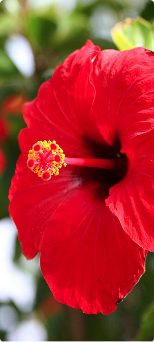

Hibiscus Rosa-Sinensis
(Kembang Sepatu)
Kembang sepatu, bunga sepatu, bunga raya, wara-wiri atau worawiri (bahasa Latin: Hibiscus rosa-sinensis L.) adalah tumbuhan semak suku Malvaceae yang berasal dari Asia Timur dan banyak ditanam sebagai tanaman hias di daerah tropis dan subtropis. Bunganya besar, berwarna merah, putih, atau kuning muda dan tidak berbau. Bunga dari berbagai kultivar dan kacukan ini bisa berupa bunga tunggal (daun mahkota selapis) atau bunga ganda (daun mahkota berlapis) yang berwarna putih hingga kuning, jingga hingga merah tua atau merah jambu.